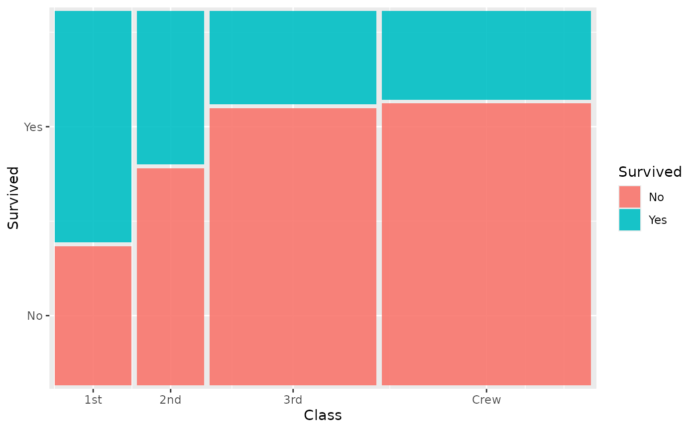
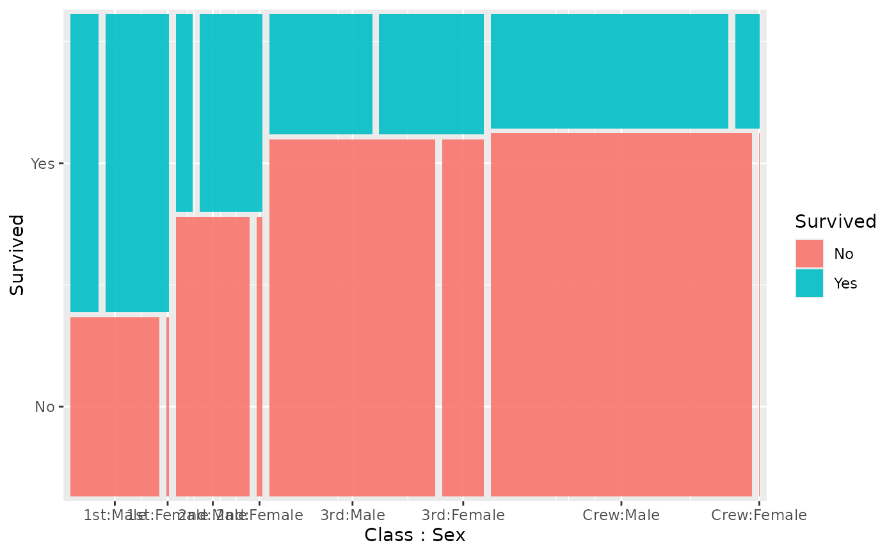
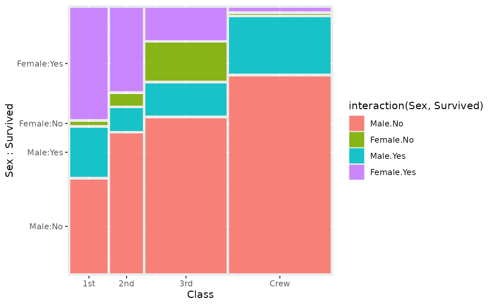
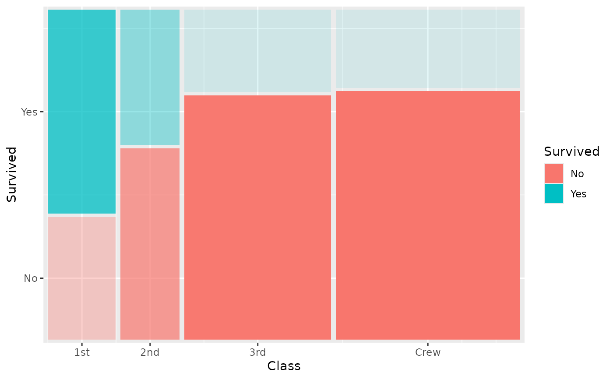
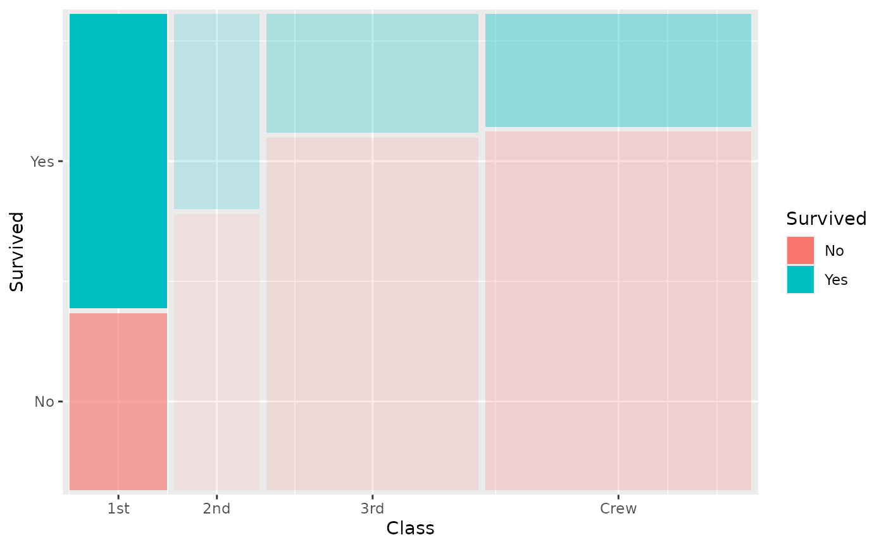

Generalized mosaic plot with formula-based variable nesting
geom_marimekko.RdGeneralized mosaic plot with formula-based variable nesting
Usage
geom_marimekko(
mapping = NULL,
data = NULL,
formula = NULL,
gap = 0.01,
gap_x = NULL,
gap_y = NULL,
colour = NULL,
alpha = 0.9,
show_percentages = FALSE,
na.rm = FALSE,
show.legend = NA,
inherit.aes = TRUE,
...
)Arguments
- mapping
Aesthetic mapping. Optionally accepts
fillandweightfor pre-aggregated data. Iffillis not specified, it defaults to the last variable in the formula. Thefillvariable controls tile colour and does not need to appear in the formula.- data
A data frame.
- formula
A one-sided formula specifying the mosaic hierarchy. See the sections above for a detailed explanation.
Quick reference:
~ a | b— h(a), v(b). Standard mosaic.~ a | b | c— h(a), v(b), h(c). Alternating mosaic.~ a + b | c— h(a), h(b), v(c). Double decker.~ a | b + c— h(a), v(b), v(c). Multiple vertical variables.
- gap
Numeric. Gap between tiles as fraction of plot area. Default
0.01.- gap_x
Numeric. Horizontal gap override. Default
NULL(usesgap).- gap_y
Numeric. Vertical gap override. Default
NULL(usesgap).- colour
Tile border colour. Default
NULL(no border). Can also be mapped viaaes(colour = variable).- alpha
Tile transparency. Default
0.9.- show_percentages
Logical. If
TRUE, appends marginal percentage to each x-axis label. DefaultFALSE.- na.rm
Logical. Remove missing values. Default
FALSE.- show.legend
Logical. Show legend. Default
NA.- inherit.aes
Logical. Inherit aesthetics from
ggplot(). DefaultTRUE.- ...
Additional arguments passed to the layer.
How the formula works
The formula uses two operators to encode the full partitioning hierarchy in a single expression:
|(pipe)Separates nesting levels. Each
|switches the splitting direction, alternating horizontal, vertical, horizontal, vertical, and so on. The first variable (or group) listed is the outermost split — it partitions the entire plot area. Each subsequent level partitions the tiles created by the previous level.+(plus)Groups variables at the same nesting level. All variables joined by
+share the same splitting direction and are applied sequentially within that level. The first+variable partitions the current tiles, then the second+variable further subdivides those tiles, still in the same direction.
Reading order — outermost to innermost
The formula is read left to right, from the coarsest (outermost) partition to the finest (innermost):
~ a | bFirst split the plot horizontally by
a(columns whose widths reflect marginal proportions ofa). Then, within each column, split vertically byb(rows whose heights reflect conditional proportions ofbgivena). This is the classic two-variable marimekko / mosaic plot.~ a | b | cHorizontal by
a, then vertical byb, then horizontal again byc. Three levels of nesting with alternating directions (h \(\to\) v \(\to\) h).~ a + b | cHorizontal by
a, then horizontal again byb(same direction because+groups them), then vertical byc. This is the double decker pattern — all horizontal splits first, with a single vertical split at the end.~ a | b + cHorizontal by
a, then vertical byb, then vertical again byc. Two vertical variables nested within each column.
Computed variables
The stat computes the following variables that can be accessed with
ggplot2::after_stat():
.proportionConditional proportion of the tile within its immediate parent. For a formula
~ a | b, this is the proportion ofbwithin each level ofa, i.e. \(P(b \mid a)\). Values sum to 1 within each parent tile. Useful for mapping toalphato fade tiles by their local share:aes(alpha = after_stat(.proportion))..marginalJoint (marginal) proportion of the tile relative to the whole dataset, i.e. \(n_\text{cell} / N\). Values sum to 1 across all tiles. Used internally for x-axis percentage labels when
show_percentages = TRUE, and can be mapped to aesthetics to emphasise cells by overall frequency..residualsPearson residual measuring departure from statistical independence between the horizontal and vertical variable groups. Computed as \((O - E) / \sqrt{E}\), where \(O\) is the observed cell count and \(E\) is the count expected under independence. Positive values indicate the cell is more frequent than expected; negative values indicate less frequent. When only one direction (all horizontal or all vertical) is present,
.residualsis set to 0. Map toalphaorfillto highlight deviations:aes(alpha = after_stat(abs(.residuals))).
Examples
library(ggplot2)
titanic <- as.data.frame(Titanic)
# 2-variable mosaic
ggplot(titanic) +
geom_marimekko(
aes(fill = Survived, weight = Freq),
formula = ~ Class | Survived
)

# 3-variable mosaic (h -> v -> h)
ggplot(titanic) +
geom_marimekko(
aes(fill = Survived, weight = Freq),
formula = ~ Class | Survived | Sex
)

# Multi-variable fill with interaction()
ggplot(titanic) +
geom_marimekko(
aes(fill = interaction(Sex, Survived), weight = Freq),
formula = ~ Class | Sex + Survived
)

# Fade tiles by conditional proportion
ggplot(titanic) +
geom_marimekko(
aes(fill = Survived, alpha = after_stat(.proportion), weight = Freq),
formula = ~ Class | Survived
) +
guides(alpha = "none")

# Highlight cells that deviate from independence
ggplot(titanic) +
geom_marimekko(
aes(fill = Survived, alpha = after_stat(abs(.residuals)), weight = Freq),
formula = ~ Class | Survived
) +
guides(alpha = "none")
